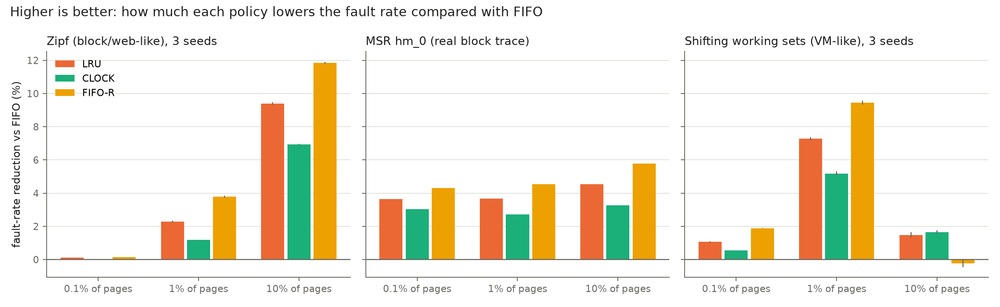
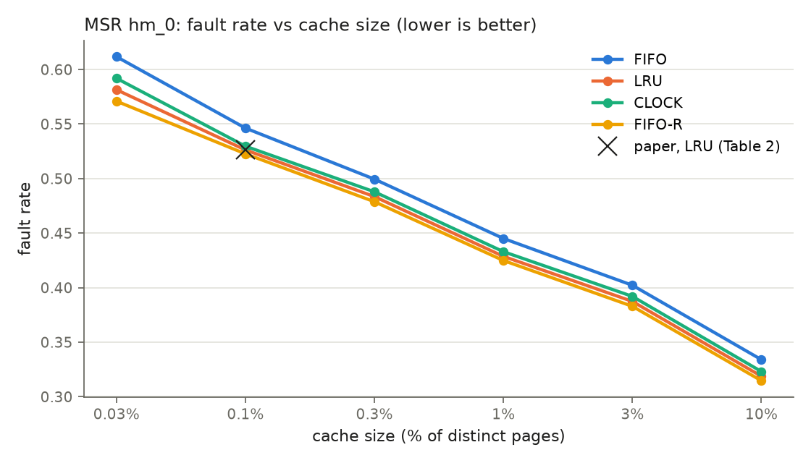
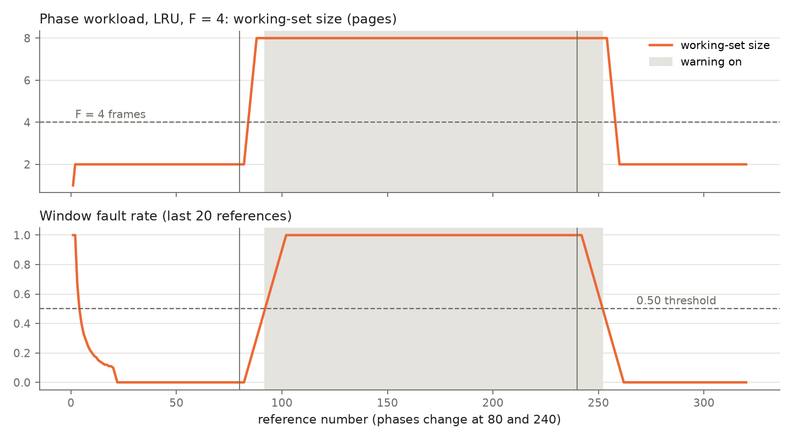
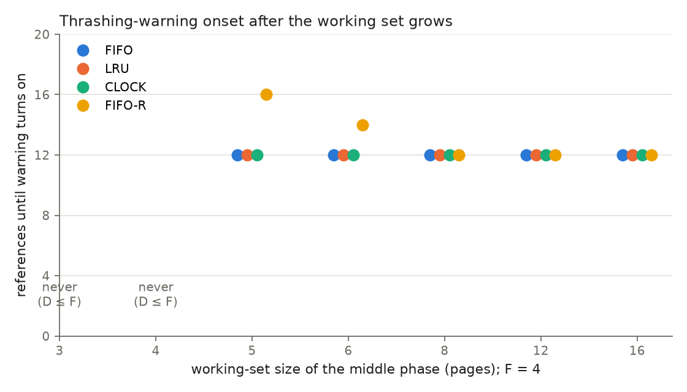
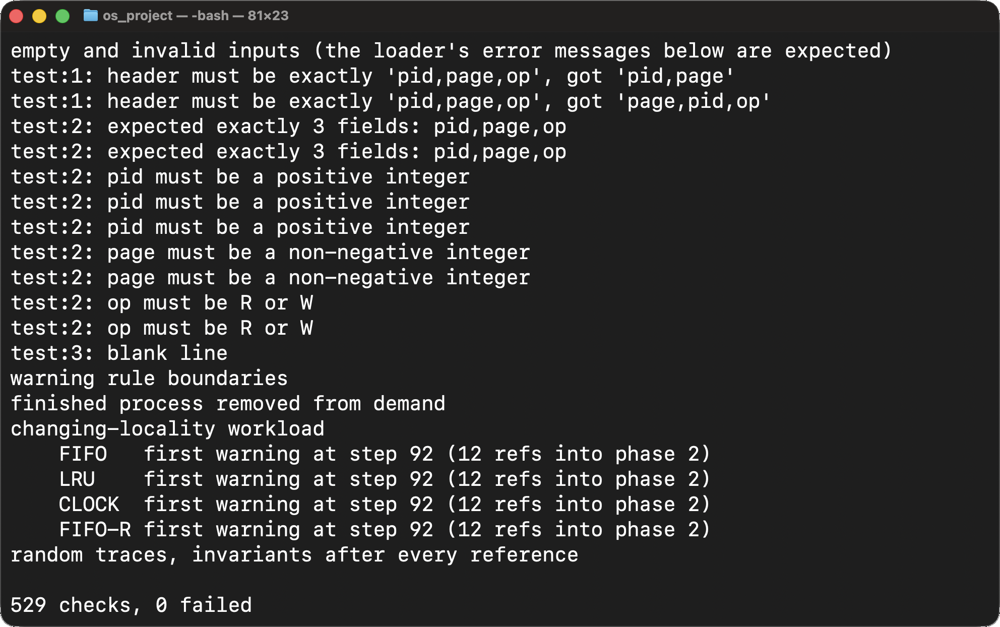
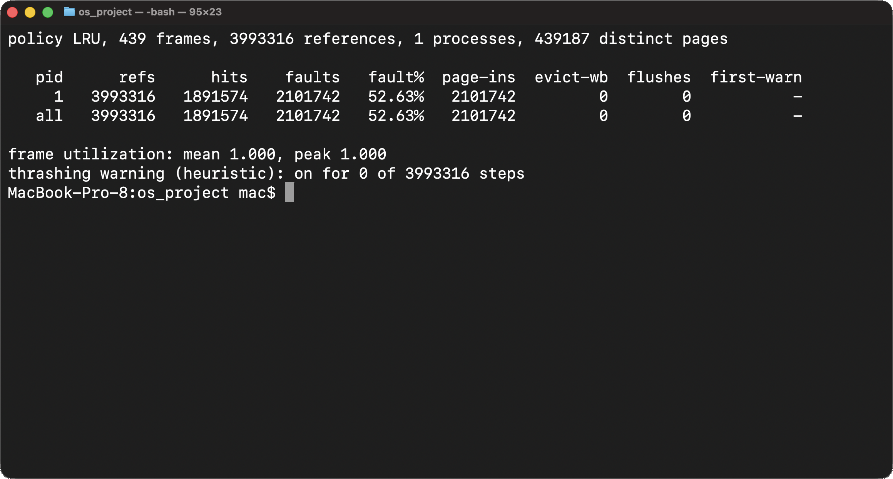
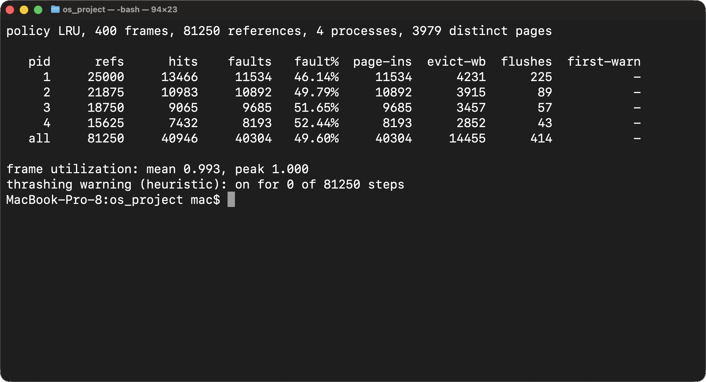
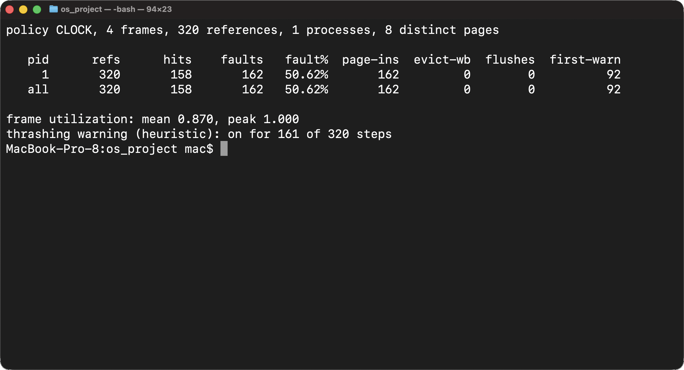
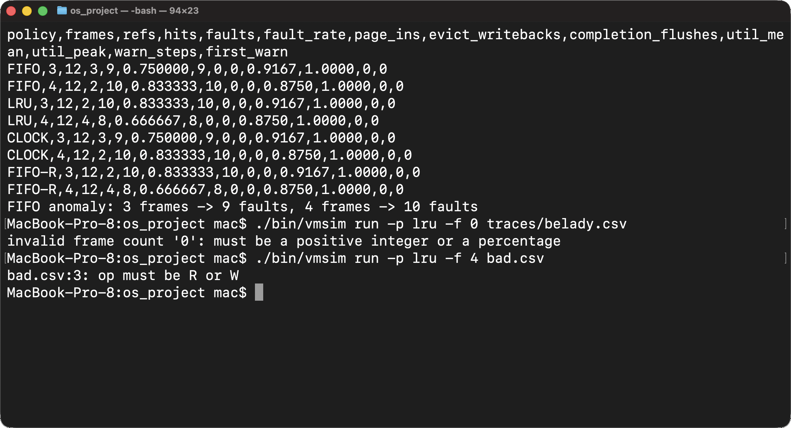

ICS 433 Operating Systems Lab, Phase 2 Progress Report
Replicating "FIFO can be Better than LRU" (HotOS 2023) for a shared-server page cache
Belal Shebl (202361930), Muhammad Ammar Sohail (202356790)
Code: github.com/3picC0der/os_project (branch main)
We are building a simulator for a multi-process virtual memory system. Processes share one global pool of physical frames, and FIFO, LRU or Clock decides which page to evict. The simulator tracks page tables, dirty pages, per-process working sets and fault rates. It also raises a simple thrashing warning.
Changes since the proposal: following the instructor's guidance, (1) the simulator is now written in C, and Python is used only to run experiments and draw charts; (2) the project is anchored on a recent paper that we replicate; and (3) it targets one concrete use case.
Reference paper: J. Yang, Z. Qiu, Y. Zhang, Y. Yue, K. V. Rashmi, "FIFO can be Better than LRU: the Power of Lazy Promotion and Quick Demotion", HotOS 2023 [1]. On 5,307 block and web cache traces, it finds that FIFO-Reinsertion (the same algorithm as 1-bit Clock and Second Chance) has a lower miss ratio than LRU, against common belief. In its footnote 2, the paper guesses that this may not hold for virtual-memory workloads, where "LRU can better adapt to sudden working set changes". The authors did not test this.
Use case: the page cache of a shared server, where several processes compete for a fixed pool of frames. Is the cheap Clock family good enough, or does LRU win when processes change their working sets?
About 75% of the system is done. All core modules work and are tested.
| Module | Status | Files |
|---|---|---|
| Strict CSV trace loader (exact header, field count, positive PID, non-negative page, R/W only, no blank rows, line-numbered errors) | Done | src/trace.c |
| Simulation engine: global frame pool, lowest free frame first, (pid, page) identity, dirty bits, page-ins, eviction write-backs, completion flushes, process cleanup | Done | src/sim.c |
| Policies: FIFO, LRU, Clock (proposal rule) and FIFO-Reinsertion (the paper's variant) | Done | src/sim.c |
| Working-set windows (last 20 references per process), total demand D, thrashing warnings with an ON/OFF log | Done | src/sim.c |
Executable invariants (sim_check), checked after every reference in the tests or with vmsim run -c | Done | src/sim.c |
Command line: vmsim run (per-process tables, logs) and vmsim compare (all policies, many frame counts, FIFO-anomaly check) | Done | src/main.c |
| Seeded workload generator: Zipf, shifting working sets, and the proposal's phase trace | Done | src/gen.c |
Real trace: MSR Cambridge hm_0 (3,993,316 references), converted from the paper authors' public copy | Done | tools/msr_to_trace.py |
| Unit tests: every case in the proposal's test table, plus the feedback items (529 checks, all passing) | Done | tests/test_sim.c |
| Experiment runner: seeds, tables, charts | Done | analysis/run_experiments.py |
| More real traces, design document, final report and demo | Remaining | Section 7 |
| Feedback | What we did |
|---|---|
| 1. Keep the model rules as executable invariants | sim_check() verifies: hits + faults = references; no (pid, page) is resident twice; each frame has one owner; occupancy ≤ F; finished processes own no frames; per-process counts sum to the totals; D equals the sum of active working sets; the FIFO/LRU queue length equals the number of resident pages. The tests call it after every reference, including on 20 random multi-process traces × 4 policies × 5 frame counts. |
| 2. The warning is a heuristic; compare onset across working-set sizes | Labelled "heuristic" in the code, the CLI output and this report. Onset was measured for middle-phase working sets of 3, 4, 5, 6, 8, 12 and 16 pages (Fig. 4). |
| 3. Independent random seeds; summarise variability | Synthetic workloads use seeds 11, 23 and 47. Tables report the mean ± sample standard deviation. |
| 4. Cleanup/reuse test with the Clock hand and per-process totals | Test test_cleanup_and_reuse: PID 1 finishes and flushes one dirty page. Its freed frames 0 and 2 are reused in order, and the Clock hand is checked after every step (0 → 1 → 0 → 1). Per-process totals are checked, and the FIFO/LRU queues are confirmed empty. |
| 5. Separate page-in, write-back and flush counts | Separate columns everywhere: page-ins, evict-wb and flushes in the CLI; page_ins, evict_writebacks and completion_flushes in every CSV and table. |
vmgen (C) ---------------+ +--> per-process + system tables (stdout)
zipf / shift / phase | |
v |
msr_to_trace.py ---> trace CSV ---> trace.c ---> sim.c ---> main.c (vmsim run | compare)
(MSR hm_0) pid,page,op validate, frames, FIFO/LRU/ |
dense ids Clock/FIFO-R, +--> step log CSV, warning log CSV
cleanup, windows, +--> compare CSV + FIFO-anomaly check
warnings, invariants |
v
run_experiments.py (Python): seeds, mean ± sd, tables, charts
where[key] = frame). One run over the 4-million-reference MSR trace takes about 2 s.Workloads: Zipf (4 processes, 1,000 pages each, α = 0.9, 30% writes; a skewed workload like the paper's block and web traces), the real MSR hm_0 block trace [2], and shift (the same as Zipf, but each process moves its whole working set to new pages 10 times; a VM-like workload with sudden phase changes). The cache sizes are the paper's 0.1% and 10% of distinct pages, plus 1%. The metric is the paper's: the reduction of the miss (fault) ratio relative to FIFO.
Validation against the paper: on MSR hm_0 at 0.1% of pages, our LRU fault ratio is 0.5263. The paper's Table 2 reports 0.5263, an exact match, so our simulator and trace conversion reproduce the paper's setup.

| Workload, size | FIFO | LRU | CLOCK | FIFO-R | Best |
|---|---|---|---|---|---|
| Zipf, 1% | 0.8690 | 0.8491 | 0.8588 | 0.8361 | FIFO-R |
| Zipf, 10% | 0.5499 | 0.4982 | 0.5118 | 0.4847 | FIFO-R |
| MSR hm_0, 0.1% | 0.5463 | 0.5263 | 0.5297 | 0.5227 | FIFO-R |
| MSR hm_0, 10% | 0.3340 | 0.3188 | 0.3231 | 0.3147 | FIFO-R |
| Shift (VM-like), 1% | 0.6483 | 0.6011 | 0.6148 | 0.5870 | FIFO-R |
| Shift (VM-like), 10% | 0.2917 | 0.2873 | 0.2868 | 0.2923 | CLOCK ≈ LRU |
Table 1. Mean fault ratio over seeds 11, 23 and 47 (sd ≤ 0.0017). The full tables, with page-ins, eviction
write-backs and completion flushes, are in results/results.md.

The warning is a heuristic for this model, not a real OS thrashing detector. On the proposal's changing-locality trace (F = 4), there is no warning in phase 1. The warning turns on during the 8-page phase and clears 13 references into phase 3, before the required 20 (Fig. 3). Across middle-phase working-set sizes (Fig. 4), there is never a warning while D ≤ F (3 or 4 pages). Above that, onset is 12 references for FIFO, LRU and Clock. Because a cyclic pattern faults on every reference, the delay is set by the 20-reference window, not by the working-set size. FIFO-R is slightly later at 5 and 6 pages. It evicts newly loaded pages first, so pages 0 and 1, which were hit in phase 1, stay resident longer and give a few extra hits.
The rule also has a built-in limit. A working set is counted over the last 20 references, so D can never be more than 20 times the number of active processes, and with at least that many frames the warning cannot turn on. This is why the MSR runs (1 process, at least 132 frames), the 10% runs and shift at 1% show no warning steps: there, zero warnings means the rule could not fire, not that there was no thrashing.



$ make clean && make && make test
...
cleanup, frame reuse and Clock hand (feedback item 4)
...
changing-locality workload
FIFO first warning at step 92 (12 refs into phase 2)
LRU first warning at step 92 (12 refs into phase 2)
CLOCK first warning at step 92 (12 refs into phase 2)
FIFO-R first warning at step 92 (12 refs into phase 2)
random traces, invariants after every reference
529 checks, 0 failed
make test: all 529 checks pass. The loader messages are expected, because those tests feed it invalid files on purpose.
$ ./bin/vmsim run -p lru -f 0.1% data/msr_hm_0.csv
policy LRU, 439 frames, 3993316 references, 1 processes, 439187 distinct pages
pid refs hits faults fault% page-ins evict-wb flushes first-warn
1 3993316 1891574 2101742 52.63% 2101742 0 0 -
all 3993316 1891574 2101742 52.63% 2101742 0 0 -
frame utilization: mean 1.000, peak 1.000
thrashing warning (heuristic): on for 0 of 3993316 steps
vmsim run -p lru -f 0.1% data/msr_hm_0.csv: LRU on the real MSR hm_0 trace gives 52.63%, the paper's Table 2 value.
$ ./bin/vmsim run -p lru -f 400 traces/zipf_seed11.csv
policy LRU, 400 frames, 81250 references, 4 processes, 3979 distinct pages
pid refs hits faults fault% page-ins evict-wb flushes first-warn
1 25000 13466 11534 46.14% 11534 4231 225 -
2 21875 10983 10892 49.79% 10892 3915 89 -
3 18750 9065 9685 51.65% 9685 3457 57 -
4 15625 7432 8193 52.44% 8193 2852 43 -
all 81250 40946 40304 49.60% 40304 14455 414 -
frame utilization: mean 0.993, peak 1.000
thrashing warning (heuristic): on for 0 of 81250 steps
vmsim run -p lru -f 400 traces/zipf_seed11.csv: four processes sharing 400 frames, with per-process page-ins, eviction write-backs and completion flushes.
$ ./bin/vmsim run -p clock -f 4 traces/phase_ws8.csv
policy CLOCK, 4 frames, 320 references, 1 processes, 8 distinct pages
pid refs hits faults fault% page-ins evict-wb flushes first-warn
1 320 158 162 50.62% 162 0 0 92
all 320 158 162 50.62% 162 0 0 92
frame utilization: mean 0.870, peak 1.000
thrashing warning (heuristic): on for 161 of 320 steps
vmsim run -p clock -f 4 traces/phase_ws8.csv: on the changing-locality trace the thrashing warning first turns on at step 92.
$ ./bin/vmsim compare traces/belady.csv 3,4 FIFO anomaly: 3 frames -> 9 faults, 4 frames -> 10 faults policy,frames,refs,hits,faults,fault_rate,page_ins,evict_writebacks,completion_flushes,... FIFO,3,12,3,9,0.750000,9,0,0,... FIFO,4,12,2,10,0.833333,10,0,0,... ... $ ./bin/vmsim run -p lru -f 0 traces/belady.csv invalid frame count '0': must be a positive integer or a percentage $ ./bin/vmsim run -p lru -f 4 bad.csv bad.csv:3: op must be R or W
vmsim compare traces/belady.csv 3,4 detects Belady's FIFO anomaly; a zero frame count and a bad trace line are rejected with clear messages.| Task | Owner |
|---|---|
| Add more MSR Cambridge traces (e.g. prn_0, proj_0, web_2, usr_2) to report the paper's "fraction of traces where FIFO-R beats LRU" | Belal Shebl |
| Extend the footnote-2 study: vary how often working sets shift and the cache size, and find where LRU starts to win | Muhammad Ammar Sohail |
| Optional: configurable window and threshold; a multi-process pressure sweep (number of processes vs. fixed F) | Muhammad Ammar Sohail |
| Design document and test report (expected vs. actual for every test case), code review and cleanup | Belal Shebl |
| Final report, slides and live demo using the saved traces | Both |
[1] J. Yang, Z. Qiu, Y. Zhang, Y. Yue, K. V. Rashmi. FIFO can be Better than LRU: the Power of Lazy Promotion and
Quick Demotion. HotOS '23, pp. 70–79, 2023. doi:10.1145/3593856.3595887
[2] D. Narayanan, A. Donnelly, A. Rowstron. MSR Cambridge traces (SNIA IOTTA trace set 388), 2007. Copy used:
ftp.pdl.cmu.edu/pub/datasets/twemcacheWorkload/cacheDatasets/msr/
[3] P. J. Denning. The working set model for program behavior. Communications of the ACM 11(5):323–333, 1968.
[4] L. A. Belady. A study of replacement algorithms for a virtual-storage computer. IBM Systems Journal 5(2):78–101, 1966.